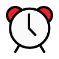
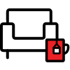

복지포인트
자기계발부터 문화생활까지, 개인의 필요에 따라 자유롭게 사용할 수 있는 현금성 복지 포인트를 지급합니다.
도서 지원
업무 역량 강화와 직원들의 성장 도모를 목적으로 다양한 도서를 구비한 사내 북카페를 운영합니다.

시차출퇴근제
하루 8시간을 근무하되,
출퇴근 시간을 선택할 수 있는
근무제를 운영합니다.
통신비 지원
매월 임직원의 원활한 업무와 커뮤니케이션을 위해 통신비 일부를 지원합니다.
교통비 지원
외근·야근 시 임직원의 안전하고 편안한 이동을 위한 택시비를 지원합니다.
식비 지원
야근 시 석식비, 휴일 근무 시 중식 또는 석식비를 지원합니다.
PS Day
매월 1회, 2시간 30분
늦게 출근하거나 일찍 퇴근하는
PS Day(Punch Stress)를 운영합니다.
동호회 지원
사내 구성원들이 함께 교류하고 취미생활을 즐길 수 있도록 사내 동호회를 운영하며, 정기 활동비를 지원합니다.
여직원 휴게실
여직원들의 컨디션 회복을 위한 여성 휴게 공간을 별도 운영합니다.

리프레시 룸
임직원의 휴식과 충전을 위해 의료기기와 안마의자를 구비한 리프레시 룸을 운영합니다.
휴양 시설
임직원의 즐거운 여행을 위해 법인 리조트를 임직원 할인가에 이용할 수 있도록 지원합니다.
카페테리아
임직원들이 자유롭게 소통할 수 있는 사내 카페를 운영하며, 커피와 음료를 즐길 수 있도록 카페 포인트를 지원합니다.
종합건강검진
임직원의 건강한 삶을 위해
매년 종합건강검진을 지원합니다.
독감 예방접종
매년 독감 예방접종 비용 전액을 지원합니다.
단체 상해보험
임직원의 크고 작은 사고 및 질병에 대비하여
실손 의료비를 지원합니다.
심리 상담 프로그램
임직원의 심리 안정을 위해
상담 프로그램을 지원합니다.
리프레시 휴가
근속 3년마다 재충전을 위한 휴가와 휴가비를 제공합니다.
명절 복지
임직원들이 편안한 귀성 길을 위해
명절 연휴 하루 전
1일 유급 휴가를 제공합니다.
경조사 지원
임직원의 행복과 위로가 필요한 순간에 함께할 수 있도록 경조금과 경조휴가를 지원하며, 경조화환 및 장례용품도 함께 제공합니다.